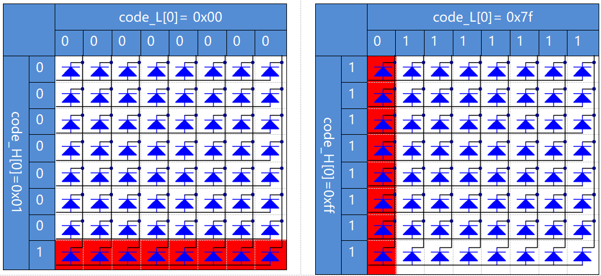

Note
Bonjour, bienvenue dans la communauté SunFounder Raspberry Pi & Arduino & ESP32 sur Facebook ! Plongez plus profondément dans l’univers du Raspberry Pi, de l’Arduino et de l’ESP32 avec d’autres passionnés.
Pourquoi nous rejoindre ?
Support d’experts : Résolvez les problèmes après-vente et les défis techniques grâce à l’aide de notre communauté et de notre équipe.
Apprendre & Partager : Échangez des astuces et tutoriels pour améliorer vos compétences.
Aperçus exclusifs : Accédez en avant-première aux annonces de nouveaux produits et bénéficiez de previews exclusives.
Réductions spéciales : Profitez de réductions exclusives sur nos nouveaux produits.
Promotions festives et cadeaux : Participez à des cadeaux et à des promotions spéciales lors des fêtes.
👉 Prêt à explorer et à créer avec nous ? Cliquez sur [Ici] et rejoignez-nous dès aujourd’hui !
1.1.6 Matrice de LED
Introduction
Comme son nom l’indique, une matrice de LED est un réseau constitué de LED. L’allumage et l’extinction de ces LED permettent de créer différents caractères et motifs.
Composants

Principe
Matrice de LED
En général, les matrices de LED peuvent être classées en deux types : cathode commune (CC) et anode commune (CA). Elles se ressemblent beaucoup extérieurement, mais leur câblage interne diffère. Vous pouvez les identifier par un test. Ce kit utilise une matrice CA. Vous pouvez voir l’inscription « 788BS » sur le côté.
Consultez la figure ci-dessous. Les broches sont disposées aux deux extrémités à l’arrière. Prenez la face avec le marquage comme référence : les broches de ce côté sont numérotées de 1 à 8, et de l’autre côté de 9 à 16.
Vue externe :

Les figures ci-dessous montrent la structure interne. Dans une matrice CA, les « ROW » représentent l’anode de la LED, et les « COL » la cathode ; c’est l’inverse pour une matrice CC. Un point commun : pour les deux types, les broches 13, 3, 4, 10, 6, 11, 15 et 16 correspondent aux COL, tandis que les broches 9, 14, 8, 12, 1, 7, 2 et 5 correspondent aux ROW. Si vous souhaitez allumer la première LED en haut à gauche, dans une matrice CA, réglez la broche 9 sur High et la broche 13 sur Low ; pour une matrice CC, réglez la broche 13 sur High et la broche 9 sur Low. Pour allumer toute la première colonne, pour une matrice CA, réglez la broche 13 sur Low et les ROW 9, 14, 8, 12, 1, 7, 2, et 5 sur High, alors que pour une CC, réglez la broche 13 sur High et les ROW 9, 14, 8, 12, 1, 7, 2, et 5 sur Low. Consultez les figures ci-dessous pour mieux comprendre.
Vue interne :

Numérotation des broches correspondant aux rangées et colonnes ci-dessus :
COL |
1 |
2 |
3 |
4 |
5 |
6 |
7 |
8 |
Pin No. |
13 |
3 |
4 |
10 |
6 |
11 |
15 |
16 |
ROW |
1 |
2 |
3 |
4 |
5 |
6 |
7 |
8 |
Pin No. |
9 |
14 |
8 |
12 |
1 |
7 |
2 |
5 |
De plus, deux puces 74HC595 sont utilisées ici. L’une contrôle les rangées de la matrice de LED, tandis que l’autre gère les colonnes.
Schéma de câblage
T-Board Name |
physical |
wiringPi |
BCM |
GPIO17 |
Pin 11 |
0 |
17 |
GPIO18 |
Pin 12 |
1 |
18 |
GPIO27 |
Pin 13 |
2 |
27 |

Procédures expérimentales
Étape 1 : Construisez le circuit. Comme le câblage est complexe, suivez les étapes une à une. Insérez d’abord le T-Cobbler, la matrice de LED et les deux puces 74HC595 dans la breadboard. Connectez les broches 3,3 V et GND du T-Cobbler aux trous sur les deux côtés de la carte, puis branchez la broche 16 et 10 des deux puces 74HC595 à VCC, et les broches 13 et 8 à GND.
Note
Dans l’image Fritzing ci-dessus, le côté avec l’étiquette est orienté vers le bas.
{kind=link}
Étape 2 : Connectez la broche 11 des deux 74HC595 ensemble, puis à GPIO27 ; ensuite, reliez la broche 12 des deux puces à GPIO18 ; et enfin, connectez la broche 14 du 74HC595 à gauche à GPIO17 et la broche 9 à la broche 14 de la deuxième puce 74HC595.

Étape 3 : Le 74HC595 à droite est destiné à contrôler les colonnes de la matrice LED. Consultez le tableau ci-dessous pour la correspondance. Les broches Q0-Q7 du 74HC595 sont reliées respectivement aux broches 13, 3, 4, 10, 6, 11, 15 et 16.
74HC595 |
Q0 |
Q1 |
Q2 |
Q3 |
Q4 |
Q5 |
Q6 |
Q7 |
LED Dot Matrix |
13 |
3 |
4 |
10 |
6 |
11 |
15 |
16 |

Étape 4 : Connectez maintenant les rangées (ROW) de la matrice de LED. Le 74HC595 situé à gauche contrôle les rangées de la matrice. Consultez le tableau ci-dessous pour la correspondance. On peut observer que les broches Q0-Q7 du 74HC595 à gauche sont respectivement reliées aux broches 9, 14, 8, 12, 1, 7, 2 et 5.
74HC595 |
Q0 |
Q1 |
Q2 |
Q3 |
Q4 |
Q5 |
Q6 |
Q7 |
LED Dot Matrix |
9 |
14 |
8 |
12 |
1 |
7 |
2 |
5 |

Étape 5 : Accédez au dossier contenant le code.
cd ~/davinci-kit-for-raspberry-pi/c/1.1.6/
Étape 6 : Compilez le code.
gcc 1.1.6_LedMatrix.c -lwiringPi
Étape 7 : Exécutez le programme.
sudo ./a.out
Après l’exécution du code, la matrice de LED s’allume et s’éteint ligne par ligne et colonne par colonne.
Note
Si cela ne fonctionne pas après l’exécution ou si un message d’erreur s’affiche : "wiringPi.h: No such file or directory", veuillez vous référer à C code is not working?.
Code
#include <wiringPi.h>
#include <stdio.h>
#define SDI 0 //entrée de données série
#define RCLK 1 //entrée d'horloge mémoire (STCP)
#define SRCLK 2 //entrée d'horloge de registre à décalage (SHCP)
unsigned char code_H[20] = {0x01,0xff,0x80,0xff,0x01,0x02,0x04,0x08,0x10,0x20,0x40,0x80,0xff,0xff,0xff,0xff,0xff,0xff,0xff,0xff};
unsigned char code_L[20] = {0x00,0x7f,0x00,0xfe,0x00,0x00,0x00,0x00,0x00,0x00,0x00,0x00,0xfe,0xfd,0xfb,0xf7,0xef,0xdf,0xbf,0x7f};
void init(void){
pinMode(SDI, OUTPUT);
pinMode(RCLK, OUTPUT);
pinMode(SRCLK, OUTPUT);
digitalWrite(SDI, 0);
digitalWrite(RCLK, 0);
digitalWrite(SRCLK, 0);
}
void hc595_in(unsigned char dat){
int i;
for(i=0;i<8;i++){
digitalWrite(SDI, 0x80 & (dat << i));
digitalWrite(SRCLK, 1);
delay(1);
digitalWrite(SRCLK, 0);
}
}
void hc595_out(){
digitalWrite(RCLK, 1);
delay(1);
digitalWrite(RCLK, 0);
}
int main(void){
int i;
if(wiringPiSetup() == -1){ //si l'initialisation de wiring échoue, afficher le message sur l'écran
printf("setup wiringPi failed !");
return 1;
}
init();
while(1){
for(i=0;i<sizeof(code_H);i++){
hc595_in(code_L[i]);
hc595_in(code_H[i]);
hc595_out();
delay(100);
}
for(i=sizeof(code_H);i>=0;i--){
hc595_in(code_L[i]);
hc595_in(code_H[i]);
hc595_out();
delay(100);
}
}
return 0;
}
Explication du Code
unsigned char code_H[20] = {0x01,0xff,0x80,0xff,0x01,0x02,0x04,0x08,0x10,0x20,0x40,0x80,0xff,0xff,0xff,0xff,0xff,0xff,0xff,0xff};
unsigned char code_L[20] = {0x00,0x7f,0x00,0xfe,0x00,0x00,0x00,0x00,0x00,0x00,0x00,0x00,0xfe,0xfd,0xfb,0xf7,0xef,0xdf,0xbf,0x7f};
Le tableau code_H représente les éléments de la ligne de la matrice de LED, et le tableau code_L correspond aux éléments de la colonne. Lors de l’affichage des caractères, un élément de la ligne et un de la colonne sont sélectionnés et assignés respectivement aux deux puces HC595. Ainsi, un motif est affiché sur la matrice de LED. Prenons le premier nombre de code_H, 0x01 et le premier nombre de code_L, 0x00 comme exemples.
0x01 converti en binaire devient 00000001 ; 0x00 converti en binaire devient 00000000.
Dans ce kit, on utilise une matrice de LED à anode commune, donc seules les huit LED de la huitième ligne s’allument. Lorsque les conditions où code_H est 0xff et code_L est 0x7f sont remplies simultanément, les 8 LED de la première colonne s’allument.
void hc595_in(unsigned char dat){
int i;
for(i=0;i<8;i++){
digitalWrite(SDI, 0x80 & (dat << i));
digitalWrite(SRCLK, 1);
delay(1);
digitalWrite(SRCLK, 0);
Écrire la valeur de dat à la broche SDI du HC595 bit par bit. La valeur initiale de SRCLK était 0, et ici elle est définie sur 1 pour générer une impulsion de front montant, puis transférer la donnée de pinSDI(DS) au registre de décalage.
void hc595_out(){
digitalWrite(RCLK, 1);
delay(1);
digitalWrite(RCLK, 0);
La valeur initiale de RCLK était 0, et ici elle est définie sur 1 pour générer une impulsion de front montant, puis transférer les données du registre de décalage au registre de stockage.
while(1){
for(i=0;i<sizeof(code_H);i++){
hc595_in(code_L[i]);
hc595_in(code_H[i]);
hc595_out();
delay(100);
}
}
Dans cette boucle, les 20 éléments des deux tableaux code_L et code_H seront chargés dans les deux puces 74HC595 un par un. Ensuite, la fonction hc595_out() est appelée pour transférer les données du registre de décalage au registre de stockage.